- Object ID: 00000018WIA30F84C20GYZ
- Topic ID: id_2008421 Version: 2.22
- Date: Sep 3, 2025, 2:44:59 PM
Crimping gradient cables
Information for correct lug crimping.
About this task
Note An optional hydraulic crimping tool (T&B TBM6PCR-LI) has been bay tested to be safe at 200 G. This tool is available for purchase directly from the manufacturer (www.tnb.com). If choosing this option, also purchase the necessary crimping dies for the tool as specified above.
Important These steps are general crimping procedure. There may be more specific information in the procedure that requires the crimping.
Procedure
- Make sure you have the correct crimping tool. The only qualified crimpers approved for use with the Thomas and Betts Color-Keyed® lugs are the Thomas and Betts model TBM5 or TBM5-S.
Figure 1. TBM5-S crimp tool 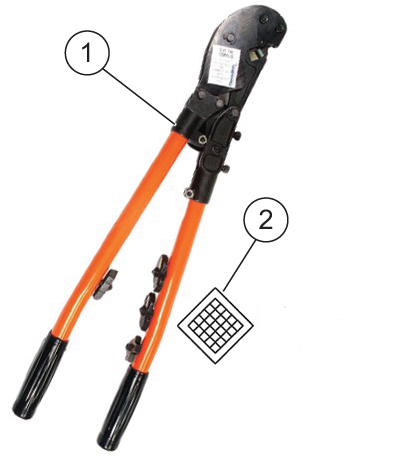
1 Crimp tool 2 Tool creates diamond style crimp - Identify the required lugs for your procedure. Consult the procedure for the correct lugs.
Table 1. Available lugs Picture GE HealthCare part number MFG MFG part number Color band Die number/ gauge Stud size 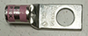
5799023 Thomas & Betts 54155-TB Pink 42/1/0 AWG 0.500 inch 5826292 Thomas & Betts 256-30695-886 Pink 42/1/0 AWG 0.500 inch 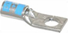
5368384 Thomas & Betts 54105 Blue 24/6 AWG 0.250 inch - The crimpers and lugs in the kit are approved for DV field-terminated gradient cable installation:
- Crimper tool: Thomas & Betts TBM5 or TBM5-S
- Lugs: Use the lugs shown by the procedure.
Figure 2. Lug feature identification 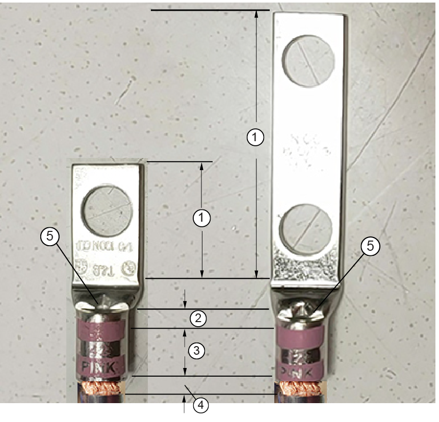
1 Terminal mating area 2 End bellmouth 3 Barrel (conductor crimp area) 4 Entry bellmouth 5 Brush inspection window - Match the color on the lug to the color on the die.Note The die may need to be switched when crimping a different colored lug (blue ground and pink or green lugs require different dies).Note A crimping nest with more than one color band may be used to crimp Color-Keyed® connectors matching any of the nest color bands.
Figure 3. Die 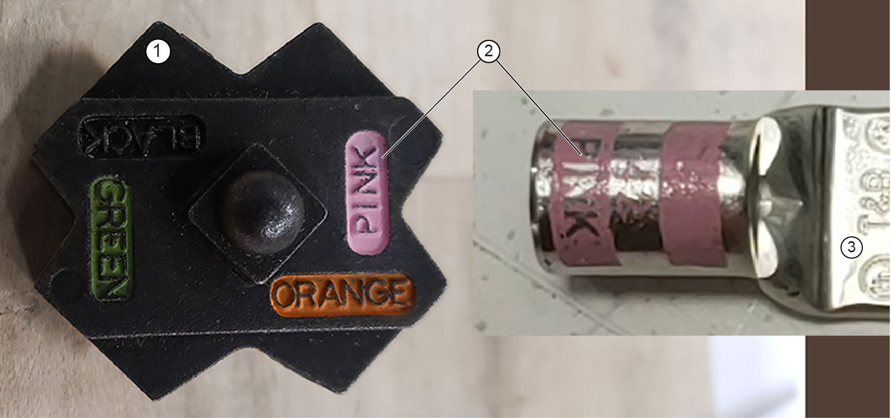
1 Die 2 Color code Table 2. Die color codes Die catalog number Die groove color Equivalent hex die code number 13454 Blue 24 13455 Green 37 - Examine the end of each wire that will receive a lug. Wire strands must be equal in length to allow full insertion into the barrel of the lug to the end of the bellmouth. Note The clear plastic insulation can be removed from the stripped cable.
- Dry fit the correct lug on each cable and:
- Align the lug with the connection on the component.
- Mark the orientation of the lug with a marker. (This step eliminates the need to twist the gradient cable when attaching the lug.)
- While dry fitting the lug, make sure that the:
- Cable is fully inserted in the lug.
- Insulation is not charred or melted.
- Gap from the insulation to barrel is less than the width of a two-wire bundle.
- Insulation does not extend into the barrel of the lug.
- If these conditions are not confirmed, trim the cable or insulation as needed.
Figure 4. Confirming gap and insulation clearance 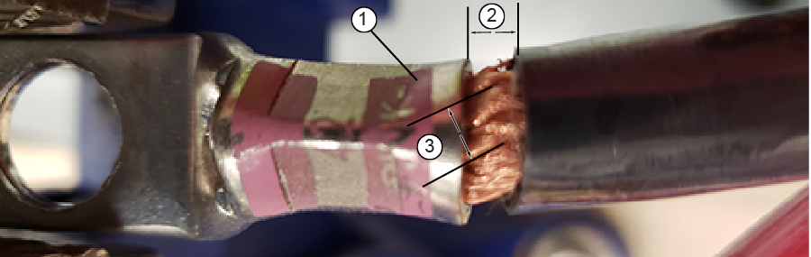
1 Barrel 2 Insulation to barrel gap (must be less than #3) 3 Two-wire bundle diameter - Put each lug in the die grooves of the crimping tool so the die is between the outer color-coded marks. Align each lug with the marks and crimp each lug onto the wires.Note Use only the TBM5 or the TBM5-S supplied in GE HealthCare Gradient Cable Tool Kit and the furnished T&B lugs.
Figure 5. Lug placement on crimp tool 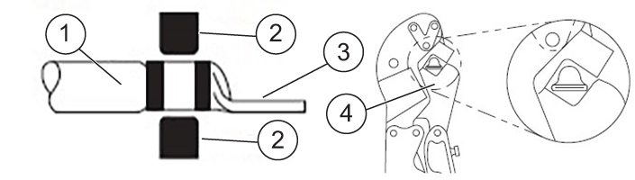
1 Wire 2 Die 3 Lug 4 Crimp tool - As each crimp is made, make sure that:
- There are no loose wire strands. All conductor strands must be contained within the conductor crimp area. Zero loose strands are allowed.
Figure 6. Good loose strand example 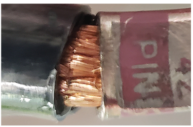
Figure 7. Bad loose strand example 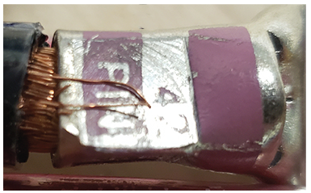
- The crimp is centered within the crimp area and the bellmouth is evident at each end of the conductor crimp area. No visible fractures or cracks should be present in the lug barrel or terminal contact mating area.
Figure 8. Good strand depth example 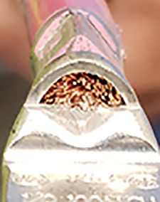
Figure 9. Bad strand depth example 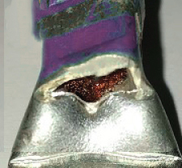
- Strand damage is within allowable parameters. The allowable strand damage as defined by IPC/WHMA-A-620C section 3.2 for Class 2 is 6%. The number of damaged (scraped, nicked, or severed) strands in a single cable should not exceed this limit. The maximum number of allowable cut strands is limited to 6% (for a 1AWG gauge wire, the maximum number of damaged strands is 50). Note Strands that are cut off and do not continue into the lug barrel should be considered a loose strand and noted as a defect.
Figure 10. Example of 1 AWG with greater than 6% cut strands 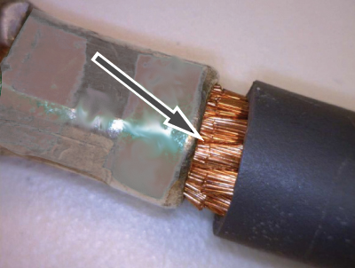
- The gap is less than the diameter of a two-wire bundle from the barrel. For an example, see Confirming gap and insulation clearance.
- Proper crimp compressions were used on the 1 AWG and 6 AWG gradient cables. Reference the next step for details.
- There are no loose wire strands. All conductor strands must be contained within the conductor crimp area. Zero loose strands are allowed.
- Do a check of the lug crimp pattern.
- From the gradient filter end of the positive cable, measure 210 mm up the gradient cable. Cut or adjust the cable lengths as needed to allow these dimensions.Note For instructions on the proper way to strip the gradient cable, see Stripping gradient cables.
Figure 11. Stripping gradient cables 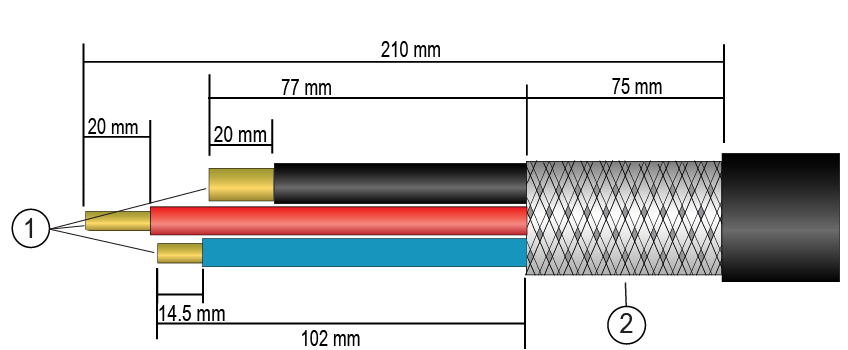
1 Wires 2 Braid - Remove the outer cable jacket up to a length of 210 mm from the cut end of the cable.
- Measure and mark 75 mm from edge of outer insulation.
- Remove the remaining braid from the mark to the end of each cable, exposing the two red wires, two black wires, and the ground wire.
Figure 12. Cutting the braid shield 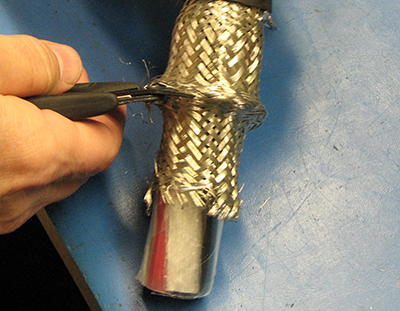
- Remove the plastic covering on the braid.
- On the negative (black) cables, measure 77 mm from the braid (or 152 mm from the edge of the outer insulation) and cut each cable.
- On the end of each cable jacket, apply the provided yellow and green tape as shown (if needed).
Figure 13. Label and tape application 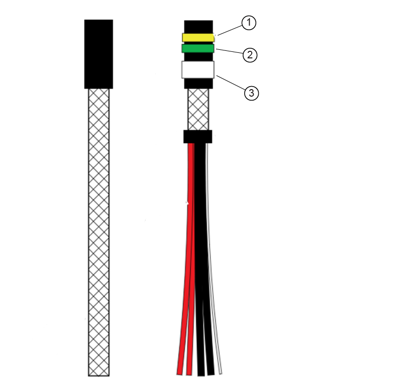
1 Yellow tape 2 Green tape 3 Cable label - Apply the applicable cable label for each run: Run E3317 = FILT X, run E3318 = FILT Y, and run = FILT Z (if needed).
- Apply the applicable cable label for each run: Run M3317 = FILT X, run M3318 = FILT Y, and run M3319 = FILT Z (if needed).
- Label the black and red wires in each gradient cable (if needed):
- Red wires are positive (+)
- Black wires are negative (-)
- Attach and secure the lugs to the corresponding posts with a screw. Torque each bolt to 45 N m (33.19 ft-lbs).
- Tighten the upper and lower clamps until each gradient cable is secured. Do not pinch or compress the gradient cable.Note The lower clamps are reversible. The smaller side of the clamps (1 AWG) should face inward.
- Install the equipment room side gradient filter cover.